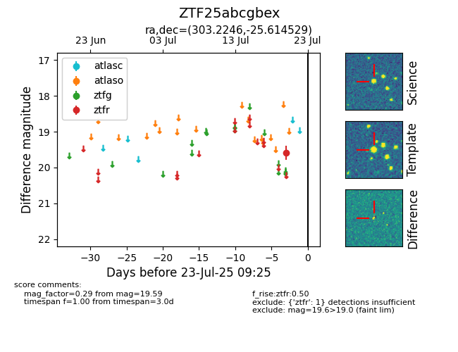

Target ZTF25abcgbex at 2025-07-23 12:37, see:
FINK: fink-portal.org/ZTF25abcgbex
Lasair: lasair-ztf.lsst.ac.uk/objects/ZTF25abcgbex
ALeRCE: alerce.online/object/ZTF25abcgbex
alt names
ZTF25abcgbex (ztf,fink)
coordinates:
equatorial (ra, dec) = (303.2246,-25.61453)
galactic (l, b) = (16.9780,-28.45100)
photometry
last ztfr=19.59
1 ztfr detections
